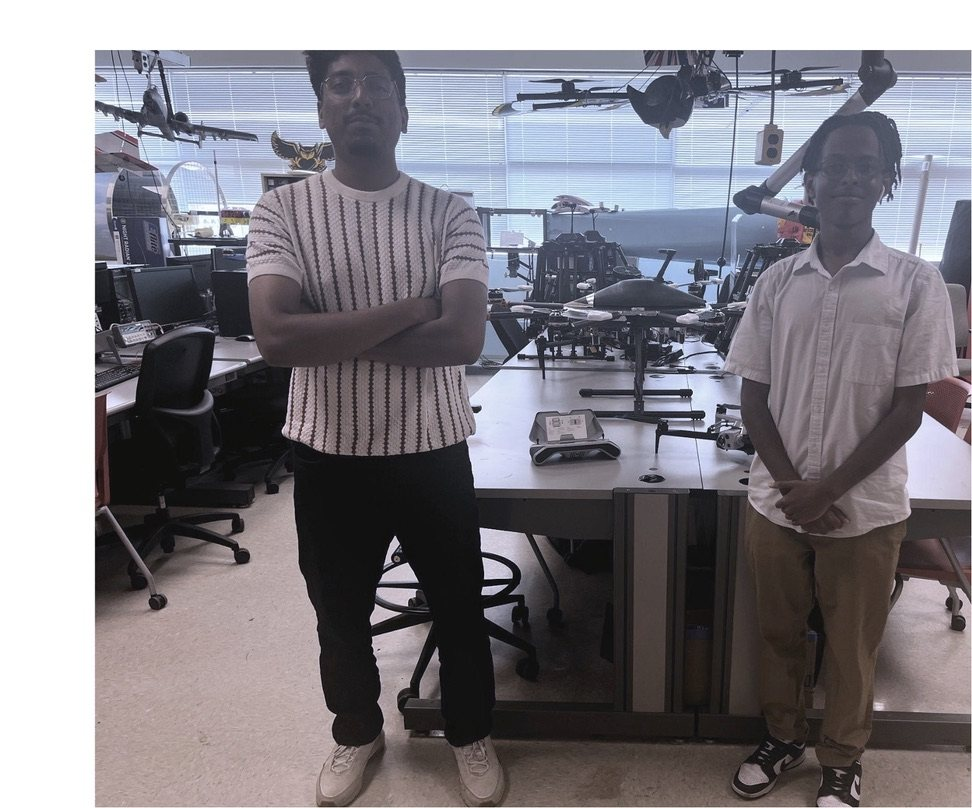

Research
Aerospace Research Intern
- Designed and evaluated a multirotor UAV in SOLIDWORKS and used computational fluid dynamics to study lift, drag and aerodynamic forces before the build.
- Integrated and evaluated YOLO object-detection models on UAV platforms to identify and count roadway vehicles for traffic-monitoring research.
- Designed a UAV life jacket delivery mechanism in SOLIDWORKS and used structural stress analysis to evaluate its load capacity.
- Co-authored a conference paper presented at the AIAA AVIATION 2026 Forum.
- Helped design, build and test a gravity-powered pumpkin launcher for Kennesaw State's annual Pumpkin Launch competition.
